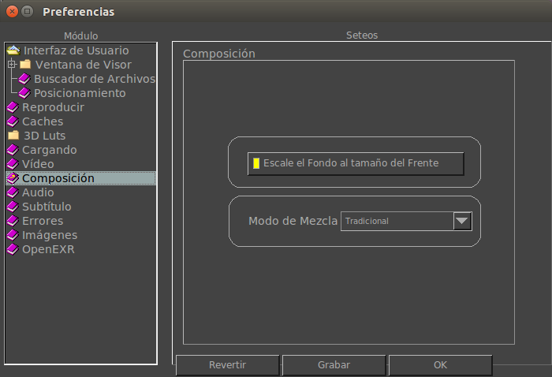

La ficha de Preferencias de Composición te permite configurar cómo funciona la composición de imagenes y/o video.

Escale el Fondo al Tamaño del Frente
Por defecto, la imagen del fondo es escalada para empatar el tamaño de la imagen del frente. Apagando esta opción dejará a la imagen de fondo en su tamaño original.